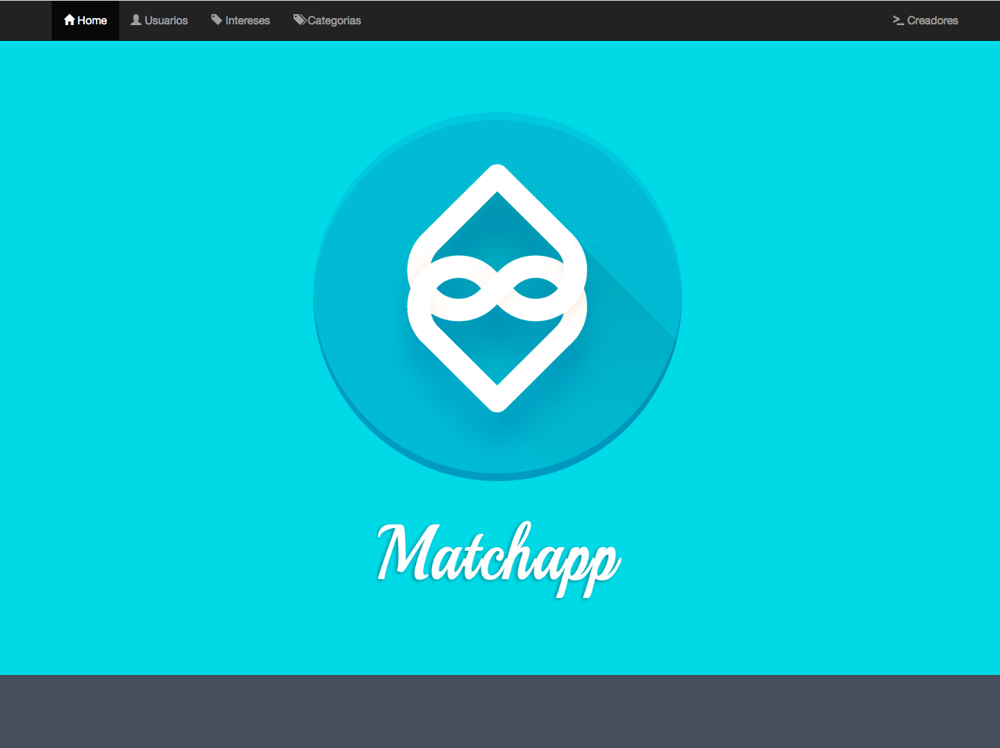

Manual de usuario¶
La direccion de la pagina es http://tander.herokuapp.com/
Home¶
Al ingresar es vera la siguiente pantalla
Para ir a la seccion de Usuarios apretar el boton de usuarios en la barra superior, igual es para la seccion Intereses y Categorias
Usuarios¶
Al ingresar en la seccion Usuarios se vera la siguiente pantalla, donde se listan todos los usuarios actuales
De cada usuario se muestra el id, el nombre el alias, el sexo, la edad, la ubicacion y los intereses. Si se desea ver la foto de una usuario particular, se puede clickear en “Ver Imagen” del usuario desesado y se abrira la imagen. Si se quiere eliminar un Usuaio, basta con apretar el boton con la cruz de la columna “Eliminar”
Si se quiere crear un nuevo usuario, se debe cliquear en el boton “Crear Usuario” y se accedera a la siguiente pantalla
Se debera completar todos los campos. Siendo los campos de edad y de ubicacion exclusivamente numericos. Se peude seleccionar la foto apretando en “Choose File”. Para cargar los itnereses basta con apretar en el espacio para los intereses y mostrara todos los disponibles, pudiendo buscar facilmente. Una vez llenos todos los campos, apretar en crear usuario y la pagina volvera a todos los usuarios donde mostrara el usuario creado.
Intereses¶
Al acceder a la seccion de intereses se vera la siguiente pantalla
Donde se ven listados a todos los intereses. De cada interes, se muestra el nombre y a categoria. Para borrar un interes, basta con apretar el boton con la cruz de la coumna de eliminar. Para agregar un interes, se debe llenar los campos de abajo, con el nombre del interes nuevo y con la categoria, una vez llenos, apretar “Crear Interes” y la pagina se actualizara mostrando el nuevo interes.
Para editar un interes, se debe apretar el boton con el lapiz de la columna Editar y se vera la siguiente pantalla
Donde se mostrara el interes que se esta editando, pudiendo cambiar el nombre y/o la categoria, una vez terminado, apretar Modificar Interes, en caso de no querer hacer ningun cambio, apretar Cancelar. Ambos casos lo redirigen a la lista de intereses
Categorias¶
Al acceder a la seccion de categorias se vera la siguiente pantalla
Donde se muestra la lista de categorias. Para eliminar una categoria basta con apretar el boton de la cruz de la columna Eliminar. Para crear una categoria nueva, hay que llenar el campo de abajo de todo y apretar Crear Categoria, luego se actualizara la pagina mostrando la categoria nueva.
Si se desea modificar el nombre de una categoria, se debe apretar el boton del lapiz de la columna Editar, lo cual abrira la siguiente pantalla
Se debera poner el nombre nuevo de dicha categoria y apretar OK, en caso de no querer hacer cambios, basta con apretar Cancel